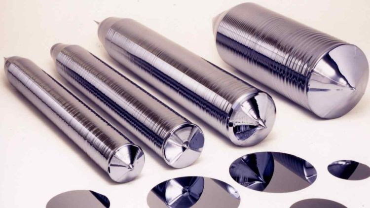
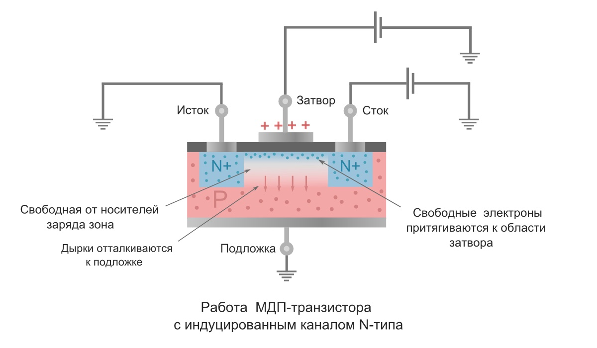
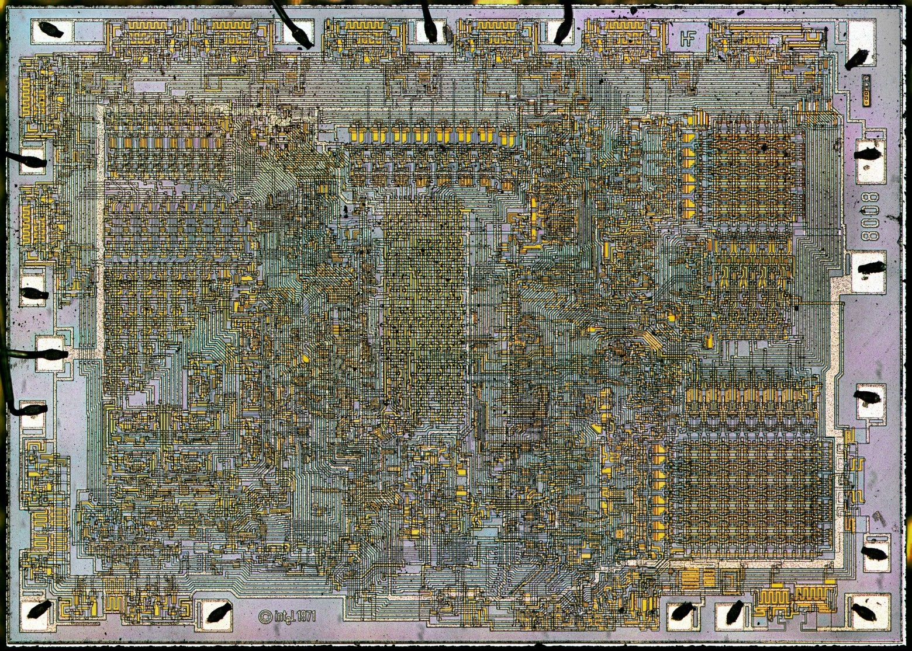

↑Press It↑
click
Уровень 1: Информация известная всем.
Что такое процессор?
Что такое процессор?
Центральный процессор — электронный блок либо интегральная схема, исполняющая машинные инструкции (код программ), главная часть аппаратного обеспечения компьютера или программируемого логического контроллера.
Главными характеристиками ЦПУ являются:
- Тактовая частота
- Производительность
- Энергопотребление
- Архитектура
Современные процессоры можно найти не только в таких высокотехнологичных устройствах, как компьютеры, но и в автомобилях, калькуляторах, мобильных телефонах и даже в детских игрушках. Чаще всего они представлены микроконтроллерами.
Уровень 0: Информация известная информатикам.
Логический принцип работы процессора.
Логический принцип работы процессора.
Пункт 1:
Блок управления процессором берет из оперативной памяти, в которую загружена программа, определенные значения (данные) и команды которые необходимо выполнить (инструкции). Эти данные загружаются в кэш-память процессора.
Блок управления процессором берет из оперативной памяти, в которую загружена программа, определенные значения (данные) и команды которые необходимо выполнить (инструкции). Эти данные загружаются в кэш-память процессора.
Пункт 2:
Из буферной памяти процессора (кэша) инструкции и полученные данные записываются в регистры. Инструкции помещаются в регистры команд, а значения в регистры данных.
Из буферной памяти процессора (кэша) инструкции и полученные данные записываются в регистры. Инструкции помещаются в регистры команд, а значения в регистры данных.
Пункт 3:
Арифметико-логическое устройство считывает инструкции и данные из соответствующих регистров процессора и выполняет эти команды над полученными числами.
Арифметико-логическое устройство считывает инструкции и данные из соответствующих регистров процессора и выполняет эти команды над полученными числами.
Пункт 4:
Результаты снова записываются в регистры и если вычисления закончены в буферную память процессора.
Результаты снова записываются в регистры и если вычисления закончены в буферную память процессора.
Пункт 5:
Если цикл вычислений закончен, результат записывается в оперативную память компьютера для высвобождения места в буферной памяти процессора для новых вычислений.
Если цикл вычислений закончен, результат записывается в оперативную память компьютера для высвобождения места в буферной памяти процессора для новых вычислений.
click
click
Уровень -1: Информация известная микросхематехникам.
Физический принцип работы процессора.
Физический принцип работы процессора.

Основой любого процессора служит кремниевая пластина, которая была предварительно сформирована при помощи кристалла, разрезана на диски и тщательно отшлифована.
Далее начинается процесс фотолитографии. При помощи специального покрытия, реагирующего на свет и изменяющего в последствии свойства материала, специального шаблона и ультрафиолетового излучения на поверхности диска формируются полупроводники. Весь получившийся слой покрывают тонким слоем диэлектрика и процесс повторяется.


При объединении двух проводником, на один из которых подаётся постоянный ток, соединяющим каналом образуется транзистор. В нейтральном состоянии ток не может перетекать с одного проводника на другой, но при подаче тока на 'мост', дорога между проводниками открывается электронам и теперь уже во втором проводнике есть ток.
Транзистор - переключатель без каких-либо механический элементов. При помощи миллионов транзисторов и соединительных каналов, располагающихся в 'бесконечных' слоях процессора формируются простейщие элементы: конъюнктор, дизъюнктор, дешифратор, АЛУ и т.д.

Уровень -2: Информация известная статистам.
Современные характеристики.
Современные характеристики.
| Процессор | Intel® Core™ i9-12900K | AMD Ryzen™ 9 7950X | Apple M1 Ultra | Apple M2 |
| Число ядер ЦП | 8P + 8E | 16 | 16P + 4E | 8 |
| Число потоков | 24 | 32 | 20 | 8 |
| Техпроцесс | 10нм | 5нм | 5нм | 5нм |
| Базовая частота | 3.2GHz, 2.4GHz | 4.5GHz | 2.0GHz | 2.4GHz |
| Максимальная частота | 5.1GHz, 3.9GHz | 5.7GHz | 3.2GHz | 3.5GHz |
| Кэш-память L2 | 14Mb | 16Mb | 48Mb | 16Mb |
| Тип памяти | DDR5-4800, DDR4-3200 | DDR5-5200 | LPDDR5-6400 | LPDDR5-6400 |
| Макс. пропускная способность памяти | 76.8Gb/s | 79.5Gb/s | 800Gb/s | 102.4Gb/s |
| Графическая система | UHD-графика Intel® 770 | AMD Radeon Graphics | Apple M1 Ultra GPU (64-core) | Apple M2 GPU |
| Частота GPU | 300MHz | 400MHz | 450MHz | 500MHz |